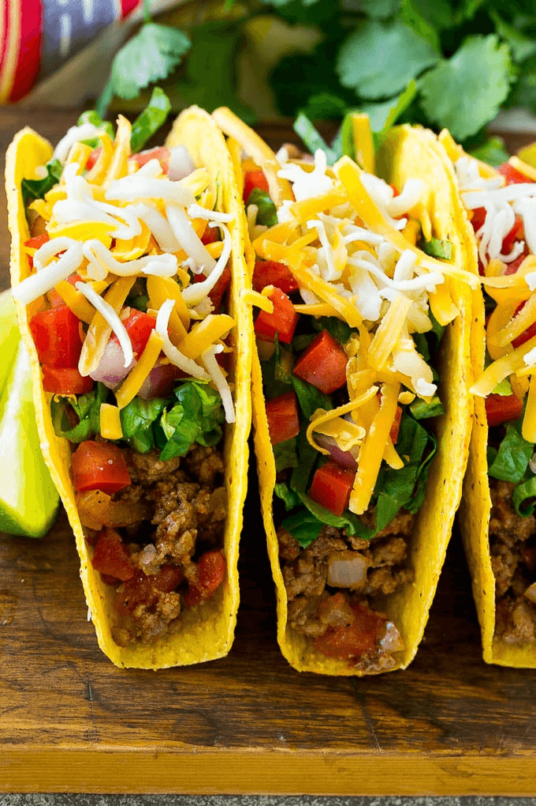

Enjoy Your Meal

Beef Tacos
Ingredients:
- 1 pound lean ground beef
- 1 cup chunky salsa
- 10 taco shells
- ½ cup shredded lettuce
- 1 tomato, chopped
- 1 cup shredded cheese
Directions:
Step 1: Cook beef in 10-inch skillet over medium heat 8 to 10 minutes, stirring occasionally, until brown; drain.
Step 2: Stir salsa into beef. Heat to boiling, stirring constantly; reduce heat to medium-low. Cook 5 minutes, stirring occasionally. Pour beef mixture into large serving bowl.
Step 3: Heat taco shells as directed on package. Serve taco shells with beef mixture, lettuce, tomato and cheese.